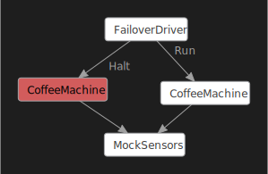
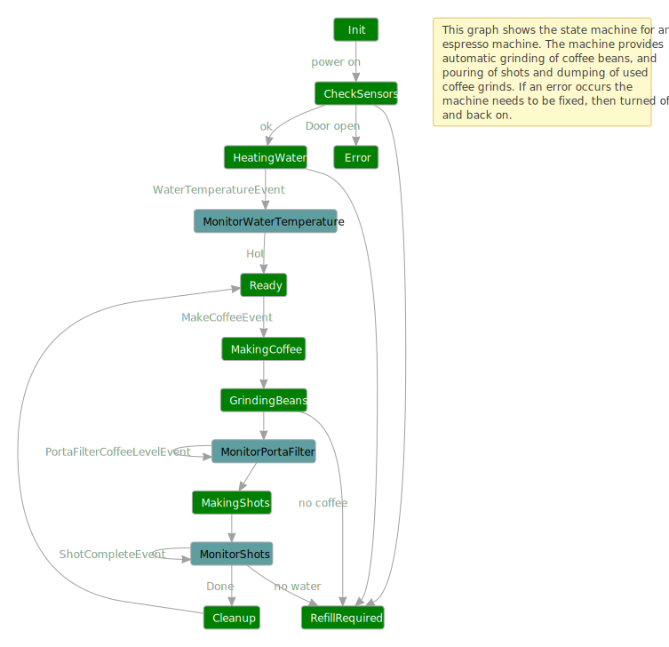

Test failover and liveness in Coyote actors
Wikipedia provides this definition: “Failover is switching to a redundant or standby computer server, system, hardware component or network upon the failure or abnormal termination of the previously active application, server, system, hardware component, or network. Systems designers usually provide failover capability in servers, systems or networks requiring near-continuous availability and a high degree of reliability.”
This sample applies the failover concept to the firmware of an automated espresso machine using the Coyote asynchronous actors programming model. Imagine what would happen if the tiny CPU running the machine rebooted in the middle of making a coffee. What bad things might happen? Can we design a state machine that can handle this scenario and provide a more fault tolerant coffee machine?
An identical version of this tutorial is available that uses regular C# tasks.
The following diagram shows how Coyote can be used to test this scenario and help you design more reliable software.

The CoffeeMachine is modeled as an asynchronous state
machine. This example is not providing real firmware,
instead it mocks the hardware sensor platform built into the machine. This is done in
MockSensors.cs where you will find three actors that model various hardware components:
MockDoorSensor, MockWaterTank and MockCoffeeGrinder. This actor provides async ways of reading
sensor values like Water temperature and water levels, or turning on and off the coffee grinder and
so on. The CoffeeMachine does not know the sensors are mocks, all it knows is the public
interface defined in SensorEvents.cs. In this way the CoffeeMachine is production code, while
the mocks are only for testing.
The reason we are using an asynchronous model is that even in the smallest of devices, often times there is a message passing architecture where different hardware components are connected via some sort of bus, whether it is a simple serial port, or something more sophisticated like a CAN bus.
We will test that we can kill the CoffeeMachine and restart it without anything bad happening.
This test is setup by the FailoverDriver. The FailoverDriver lets the first CoffeeMachine
instance run for a bit then it randomly kills it by using the HaltEvent, then it starts a new
CoffeeMachine. The new CoffeeMachine instance needs to figure out the state of the sensors such
that when a MakeCoffeeEvent arrives, it doesn’t do something silly that breaks the machine. The
mock sensors are not killed so that it acts as a persistent store for sensor state across all
instances of the CoffeeMachine.
Some safety Asserts are placed in the code that verify certain important things, including:
- do not turn on heater if there is no water
- do not turn on grinder if there are no beans in the hopper
- do not turn on shot maker if there is no water
- do not do anything if the door is open
There is also a correctness assert in the CoffeeMachine to make sure the correct number of
espresso shots are made and there is a LivenessMonitor that monitors the CoffeeMachine to make
sure it never gets stuck, i.e., it always finishes the job it was given or it goes to an error state
if the machine needs to be fixed. See Liveness Checking.
A number of excellent bugs were found by Coyote during the development of this sample, and this
illustrates the fact that Coyote can be applied to any type of asynchronous software, not just cloud
services. There is still one bug remaining in the code which you can find using coyote test, and
it happens after failover just to prove the usefulness of this testing methodology.
What you will need
To run the CoffeeMachine example, you will need to:
- Install Visual Studio 2022.
- Install the .NET 8.0 version of the coyote tool.
- Be familiar with the
coyotetool. See using Coyote. - Clone the Coyote git repo.
Build the sample
You can build the sample by following the instructions here.
Run the failover coffee machine application
Now you can run the CoffeeMachine application:
./Samples/bin/net8.0/CoffeeMachineActors.exe
The coffee machine
There are many different types of coffee machines. This example is based on the following machine which can automatically heat water, grind beans, and make an espresso shot all with the press of a button:

The following diagram shows the states and actions in our example implementation in the
CoffeeMachine class:

When you run the executable without using coyote test (this is called running in production
mode), you will see the following console output. Notice in the output below that the
FailoverDriver forces the termination of the CoffeeMachine right in the middle of making a
coffee. Then when the CoffeeMachine is restarted, the FailoverDriver requests another coffee
and the CoffeeMachine is able to continue on, the water is already warm, and it dumps the old
grinds so you have the freshest possible coffee each time.
<FailoverDriver> starting new CoffeeMachine.
<CoffeeMachine> initializing...
<CoffeeMachine> checking initial state of sensors...
<CoffeeMachine> Water level is 60 %
<CoffeeMachine> Hopper level is 93 %
<CoffeeMachine> Warming the water to 100 degrees
<CoffeeMachine> Turning on the water heater
<CoffeeMachine> Coffee machine is warming up (64 degrees)...
<CoffeeMachine> Coffee machine is warming up (74 degrees)...
<CoffeeMachine> Coffee machine is warming up (84 degrees)...
<CoffeeMachine> Coffee machine is warming up (94 degrees)...
<CoffeeMachine> Coffee machine water temperature is now 100
<CoffeeMachine> Turning off the water heater
<CoffeeMachine> Coffee machine is ready to make coffee (green light is on)
<CoffeeMachine> Coffee requested, shots=1
<CoffeeMachine> Grinding beans...
<CoffeeMachine> PortaFilter is 10 % full
<CoffeeMachine> PortaFilter is 20 % full
<CoffeeMachine> PortaFilter is 30 % full
<CoffeeMachine> PortaFilter is 40 % full
<CoffeeMachine> PortaFilter is 50 % full
<CoffeeMachine> PortaFilter is 60 % full
<CoffeeMachine> PortaFilter is 70 % full
<CoffeeMachine> PortaFilter is 80 % full
<CoffeeMachine> PortaFilter is 90 % full
<CoffeeMachine> PortaFilter is full
<CoffeeMachine> Making shots...
<FailoverDriver> forcing termination of CoffeeMachine.
<CoffeeMachine> Coffee Machine Terminating...
<CoffeeMachine> #################################################################
<CoffeeMachine> # Coffee Machine Halted #
<CoffeeMachine> #################################################################
<FailoverDriver> starting new CoffeeMachine.
<CoffeeMachine> initializing...
<CoffeeMachine> checking initial state of sensors...
<CoffeeMachine> Water level is 60 %
<CoffeeMachine> Hopper level is 83 %
<CoffeeMachine> Dumping old smelly grinds!
<CoffeeMachine> Warming the water to 100 degrees
<CoffeeMachine> Coffee machine water temperature is now 100
<CoffeeMachine> Coffee machine is ready to make coffee (green light is on)
<CoffeeMachine> Coffee requested, shots=2
<CoffeeMachine> Grinding beans...
<CoffeeMachine> PortaFilter is 10 % full
<CoffeeMachine> PortaFilter is 20 % full
<CoffeeMachine> PortaFilter is 30 % full
<CoffeeMachine> PortaFilter is 40 % full
<CoffeeMachine> PortaFilter is 50 % full
<CoffeeMachine> PortaFilter is 60 % full
<CoffeeMachine> PortaFilter is 70 % full
<CoffeeMachine> PortaFilter is 80 % full
<CoffeeMachine> PortaFilter is 90 % full
<CoffeeMachine> PortaFilter is full
<CoffeeMachine> Making shots...
<CoffeeMachine> Shot count is 1
<CoffeeMachine> 2 shots completed and 2 shots requested!
<CoffeeMachine> Dumping the grinds!
<CoffeeMachine> Coffee machine is ready to make coffee (green light is on)
<FailoverDriver> CoffeeMachine completed the job.
...
The test will continue on making coffee until it runs out of either water or coffee beans and the
FailoverDriver halts each CoffeeMachine instance at random times until the machine is out of
resources, at which point the test is complete. The mock sensors also randomly choose some error
conditions, so instead of the above you may see some errors like:
<CoffeeMachine> Cannot safely operate coffee machine with the door open!
<CoffeeMachine> Coffee machine needs manual refilling of water and/or coffee beans!
If you see these errors, press ENTER to terminate the program and run it again. These random start conditions help the test cover more cases.
Each halted machine is terminated and discarded, then a new CoffeeMachine instance is started that
must figure out what is happening with the sensors and make the next coffee without incident.
Eventually a CoffeeMachine will report there is no more water or coffee beans and then it will
stop with an error message saying the machine needs to be manually refilled.
Coyote testing
You can now use coyote test to exercise the code and see if any bugs can be found. From the samples directory:
coyote test ./Samples/bin/net8.0/CoffeeMachineActors.dll -i 100 -ms 2000 -s prioritization -sv 10 --actor-graph
Chances are this will find a bug quickly, one of the safety assertions will fire and you will see that a test output log and a DGML diagram are produced, like this:
.\Samples\bin\net8.0\Output\CoffeeMachineActors.exe\CoyoteOutput\CoffeeMachine_0_0.txt
.\Samples\bin\net8.0\Output\CoffeeMachineActors.exe\CoyoteOutput\CoffeeMachine_0_0.dgml
This log can be pretty big, a couple thousand lines where each line represents one async operation. This log contains only the one iteration that failed, and towards the end you will see something like this:
<ActionLog> Microsoft.Coyote.Samples.CoffeeMachineActors.MockCoffeeGrinder(3) invoked action 'OnGrinderButton'.
<ErrorLog> Please do not turn on grinder if there are no beans in the hopper
So the CoffeeMachine accidentally tried to grind beans when the hopper was empty. If you look at
the resulting DGML diagram you will see exactly what happened:
The Timer machines were removed from this diagram just for simplicity. The FailoverDriver
started the first CoffeeMachine on the left which ran to completion but it ran low on coffee
beans. Then this first machine was halted. The FailoverDriver then started a new CoffeeMachine,
which made it all the way to GrindingBeans where it tripped the safety assertion in MockCoffeeGrinder.
So the bug here is that somehow, the second CoffeeMachine instance missed the fact that it was low
on coffee beans. A bug exists in the code somewhere. Can you find it?
It is not a trivial bug because the CheckSensors state is clearly checking the coffee level by
sending the ReadHopperLevelEvent to the MockCoffeeGrinder actor and CheckInitialState does not
advance to the HeatingWater state until this reading is returned. So what happened?
Hint: if you search backwards in the output log you will find the following situation reported in
CheckState:
<CoffeeMachine> Hopper level is -5 %
The first CoffeeMachine instance left the grinder running a bit too long, and the sensor got
confused thinking the coffee level is negative. The new CoffeeMachine instance never thought
about this situation and checked only:
if ((int)this.HopperLevel.Value == 0)
...
And so it missed the fact it might be negative. The fix is easy, just change this condition to <=
and the bug goes away. The fact that such a bug was found shows the usefulness of the failover
testing strategy.
Testing the scheduling of highly asynchronous operations
This raises a bigger design question, how did the coffee level become negative? In firmware it is
common to poll sensor readings and do something based on that. In this case we are polling a
PortaFilterCoffeeLevelEvent in a tight loop while in the GrindingBeans state. Meanwhile the
MockCoffeeGrinder class has a timer running and when
HandleTimer calls MonitorGrinder it decreases the coffee level by 10 percent during every time
interval. So we have an asynchronous operation going on here. Coffee level is decreasing based on a
timer, and the CoffeeMachine is monitoring that coffee level using async events. This all seems
to work perfectly in the production code where we see this output:
<CoffeeMachine> Grinding beans...
<CoffeeMachine> PortaFilter is 10 % full
<CoffeeMachine> PortaFilter is 20 % full
<CoffeeMachine> PortaFilter is 30 % full
<CoffeeMachine> PortaFilter is 40 % full
<CoffeeMachine> PortaFilter is 50 % full
<CoffeeMachine> PortaFilter is 60 % full
<CoffeeMachine> PortaFilter is 70 % full
<CoffeeMachine> PortaFilter is 80 % full
<CoffeeMachine> PortaFilter is 90 % full
<CoffeeMachine> PortaFilter is full
And the reason it works is because your Operating System is scheduling both of these async threads
in a way that is relatively fair meaning one does not run for a long time without the other being
scheduled also. But what if these two systems were running in a distributed world and one of them
hangs for a long time? This is the kind of thread scheduling that coyote test is testing where one
machine can run way ahead of another.
You need to take this into account when using this kind of timer based async
events. One way to improve the design in a firmware based
system like a coffee machine is to switch from a polling based system to an interrupt based system
where the MockCoffeeGrinder can send important events to the CoffeeMachine. This style of interrupt
based eventing is used to model the ShotCompleteEvent, WaterHotEvent, WaterEmptyEvent and
HopperEmptyEvent.
This shows how Coyote can help find actual design flaws in your code so you can design a system that
is more robust in the face of unexpected faults. The coyote test engine provides several
different scheduling strategies that test different kinds of fairness algorithms. These are
designed to find different kinds of bugs.
You can find out how much testing was actually done during testing by setting the --coverage flag.
The coverage report summarizes how many of the possible events were
covered.
Liveness monitor
As described in the documentation on Liveness Checking the
CoffeeMachine must also eventually finish what it is doing. It must either make a coffee when
requested and return to the Ready state, or it must find a problem and go to the Error state or
the RefillRequired state. This “liveness” property can be enforced using a very simple
LivenessMonitor as shown below:
internal class LivenessMonitor : Monitor
{
public class BusyEvent : Event { }
public class IdleEvent : Event { }
[Start]
[Cold]
[OnEventGotoState(typeof(BusyEvent), typeof(Busy))]
[IgnoreEvents(typeof(IdleEvent))]
private class Idle : State { }
[Hot]
[OnEventGotoState(typeof(IdleEvent), typeof(Idle))]
[IgnoreEvents(typeof(BusyEvent))]
private class Busy : State { }
}
This type of Monitor is also a kind of state machine. The CoffeeMachine can send events to this
monitor to tell it when it has switched into Busy state or Idle state. When the CoffeeMachine
starts heating water, or making coffee it sends this event:
this.Monitor<LivenessMonitor>(new LivenessMonitor.BusyEvent());
and when the CoffeeMachine is done making coffee or it has moved to an error state it sends this event:
this.Monitor<LivenessMonitor>(new LivenessMonitor.IdleEvent());
The Busy state is marked as a [Hot] state and the Idle state is marked as a [Cold] state.
During testing if coyote test finds the LivenessMonitor to be stuck in the [Hot] state too
long it raises an exception and the test fails.
Reliable termination handshake
You may notice in the code that when the FailoverDriver wants to stop the first CoffeeMachine it
sends a CoffeeMachine.TerminateEvent and waits for a CoffeeMachine.HaltedEvent before it starts
a new CoffeeMachine by running this.RaiseGotoStateEvent<Test>().
This may seem a bit convoluted compared to just this.SendEvent(this.CoffeeMachineId,
HaltEvent.Instance) followed by this.RaiseGotoStateEvent<Test>(). The reason a direct halt event
was not used in this case is because a HaltEvent is processed asynchronously, which means the
RaiseGotoStateEvent would end up creating the new CoffeeMachine instance before the old one was
fully halted. This can lead to confusion in the mock sensors which are written to expect one
and only one client CoffeeMachine at a time. The TerminateEvent handshake solves that problem.
Since the TerminateEvent could be sent to the CoffeeMachine at any time we need an easy way to
handle this event at any time in CoffeeMachine, hopefully without having to decorate every single
state in the machine with the custom attribute:
[OnEventDoAction(typeof(TerminateEvent), nameof(OnTerminate))]
The solution is to promote this OnEventDoAction to the class level. Class level handlers are
handled like a fall back mechanism so that no matter what state the CoffeeMachine is in the class
level handler can be invoked, unless the current state overrides that handler.
Summary
Failover testing is simple to achieve using Coyote and yields many interesting bugs in your code, including some thought-provoking design bugs. The technique of halting your “production” actors/state-machines, and recreating them by reading from a “persistent” mock (which is not halted during testing) can be generalized to many other scenarios (e.g. cloud services) where someone needs to test failover logic of production actors using Coyote.
In this tutorial you learned:
- How to do failover testing using Coyote
FailoverDriverstate machines. - How to use Coyote in a firmware/sensor scenario.
- How to use
--strategy portfoliotesting to find tricky bugs more quickly. - How
Asserthelps find violations of safety properties during testing. - How to ensure full termination of one state machine before creating a new one.
- How to use class level event handlers in a
StateMachineto define an event handler in one place that is invoked no matter what state the machine is in. - How to write a
LivenessMonitor.